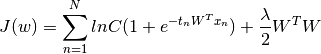
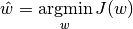
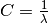

Scipy Implementation of Softmax Regression¶
In this question we implement the softmax regression with scipy library. We evaluate the digit recognition task from the mnist data.
1 C Parameter¶
The cost function with L2 regularizaion in scikit library is given below:
When the target labels t_n belongs to {-1,1 } then: .. math:
J(w) = C \sum_{n=1}^N ln C ( 1 + e^{-t_n W^T x_n}) + \frac{1}{2} W^T W
But when the target label t_n belongs to {0,1} then the L2 regularized cost function for logistic regression is given by:

While getting the maximum likelihood estimate of parameter w, we have:

And we get .